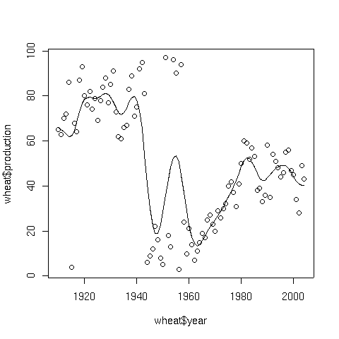
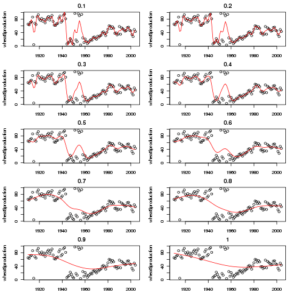
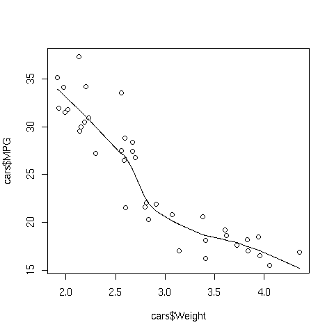
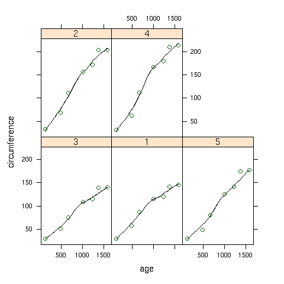
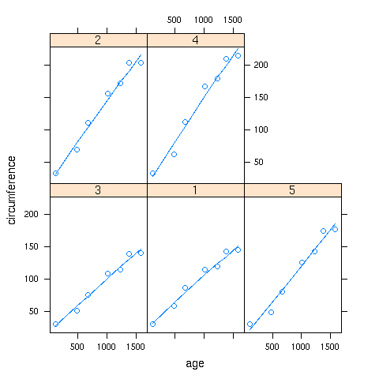

Smoothers
1 Spline Smoothers
Another type of smoothing is known as spline smoothing, named after a tool formerly
used by draftsmen. A spline is a flexible piece of metal (usually lead) which could
be used as a guide for drawing smooth curves. A set of points (known as knots) would
be selected, and the spline would be held down at a particular x,y point, then bent to
go through the next point, and so on. Due to the flexibility of the metal, this
process would result in a smooth curve through the points.
Mathematically, the process can be reproduced by choosing the knot points and using
(usually cubic) regression to estimate points in between the knots, and using calculus
to make sure that the curve is smooth whenever the individual regression lines are
joined together.
The smooth.spline function in R performs these operations.
The degree of smoothness is controlled by an argument called spar=, which
usually ranges between 0 and 1.
To illustrate, consider a data set consisting of the wheat production of the United
States from 1910 to 2004. The data set can be found at
http://www.stat.berkeley.edu/classes/s133/data/wheat.txt.
The following lines will produce a plot of the data, and superimpose a spline smooth.
> wheat = read.table('http://www.stat.berkeley.edu/classes/s133/data/wheat.txt',header=TRUE)
> plot(wheat$year,wheat$production)
> lines(smooth.spline(wheat$year,wheat$production))
Here's the result:

The amount of smoothing that smooth.spline applies is controlled by
the argument spar. We can examine the effect of spar by
producing several plots, each with a different value of spar.
plotfn = function(spar){
plot(wheat$year,wheat$production,main=spar)
lines(smooth.spline(wheat$year,wheat$production,spar=spar),col='red')
}
spars = seq(.1,1,by=.1)
par(mfrow=c(5,2),mar=c(2,4,2,1)+.1)
sapply(spars,plotfn)
The plot appears below:

2 Supersmoother
While most smoothers require specification of a bandwidth, fraction of data, or level
of smoothing, supersmoother is different in that it figures these things out for
itself. Thus, it's an excellent choice for situations where smoothing needs to be done
without any user intervention. Supersmoother works by performing lots of simple
local regression smooths, and, at each x-value it uses those smooths to decide the best
y-value to use. In R, supersmoother is made available through the supsmu
function.
To illustrate, consider the car data which we used earlier when we were studying
cluster analysis. The following lines produce a plot of weight
versus MPG, and superimposes a supersmoother line.
> plot(cars$Weight,cars$MPG)
> lines(supsmu(cars$Weight,cars$MPG))
The plot appears below:

3 Smoothers with Lattice Plots
When working with lattice graphics, we've already seen the use of panel.lmline,
which displays the best regression line in each panel of a lattice plot. A similar
function, panel.loess, is available to superimpose a locally weighted regression
smoother in each panel of a plot. As a simple illustration, consider the built-in
Orange data set, which has information about the age and circumference of
several orange trees. First, let's look at a plot with the best regression line
smoother superimposed on the plot of age versus circumference for
each Tree:
> library(lattice)
> xyplot(circumference~age|Tree,data=Orange,
+ panel=function(x,y,...){panel.xyplot(x,y,...);panel.lmline(x,y,...)})
Here's the plot:
 To create the same plot, but using the panel.loess function, we can use
the following:
To create the same plot, but using the panel.loess function, we can use
the following:
> xyplot(circumference~age|Tree,data=Orange,
+ panel=function(x,y,...){panel.xyplot(x,y,...);panel.loess(x,y,...)})
Here's how the plot looks:

If a panel. function doesn't exist for a smoother you'd like to use,
you can use the panel.lines function to plot it directly:
> xyplot(circumference~age|Tree,data=Orange,
+ panel=function(x,y,...){panel.xyplot(x,y,...);z=supsmu(x,y);panel.lines(z$x,z$y,...)})
In this case supersmoother came closer to a straight line than lowess.

File translated from
TEX
by
TTH,
version 3.67.
On 20 Apr 2011, 16:02.